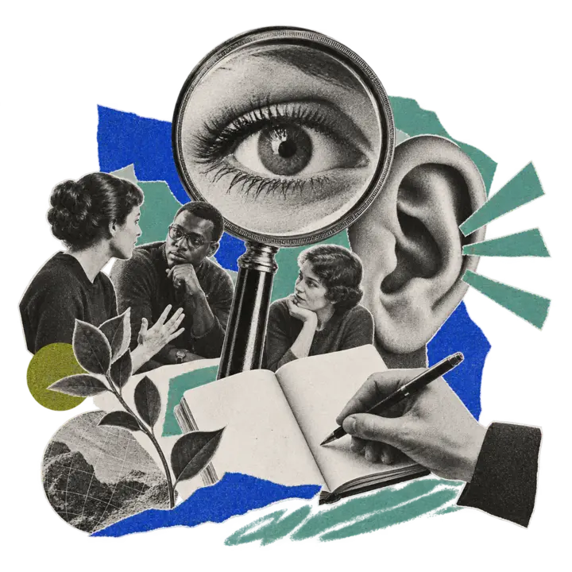
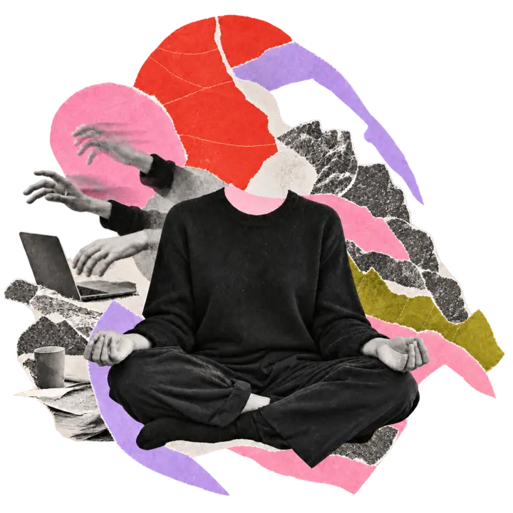

Research &
facilitation
Research, workshops and longer processes for organisations working through change or complexity.
Explore how we can work together
Research, workshops and longer processes for organisations working through change or complexity.
Explore how we can work together
Workshops and guided and curated practices for real-life moments, chaotic minds, and little time.
Practice with meHello! I'm Ieva. I help organisations, teams and individuals work with problems that won't resolve into a neat answer.
As a social scientist and strategist, I design and run the research, conversations and processes that help groups make sense of a problem, agree on a direction and get better at working together. I've done this with universities, government agencies, community organisations and climate campaigns in Australia, Europe and Asia, running everything from community consultations to large-scale surveys that inform decisions, strategies and policies.
As a meditation teacher, I draw on twelve years of Zen practice, my own problems, and a nerdy curiosity about how humans work. I teach in English and Latvian.
The two practices come from the same curiosity. Can we see things as they are? Can we notice the stories we tell ourselves, alone and together, and choose the ones that shape a present we all want to live in?
I'm based on the Central Coast of Australia, originally from Latvia, with pieces of my heart in the Netherlands, Taiwan, and France.